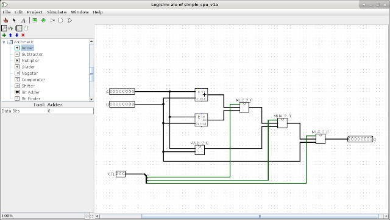
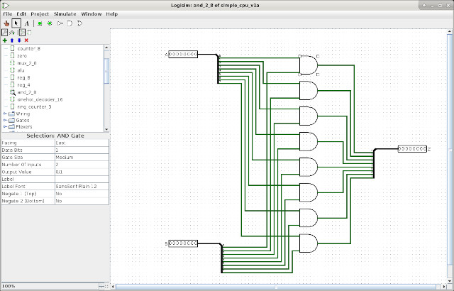
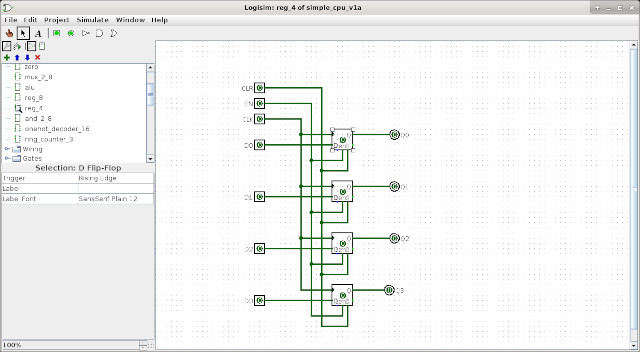
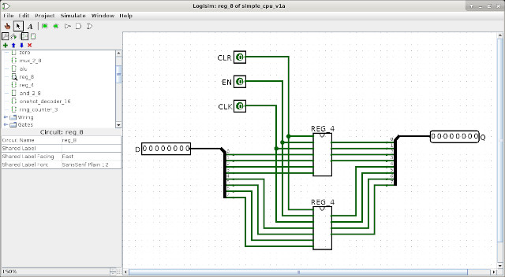
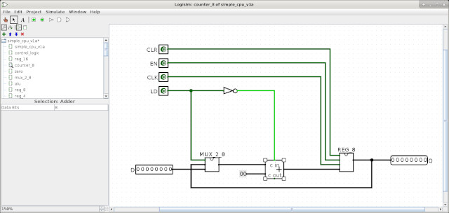
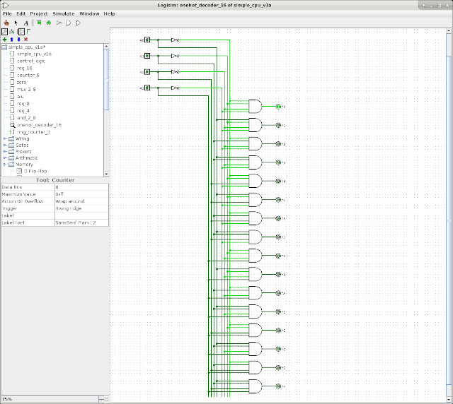
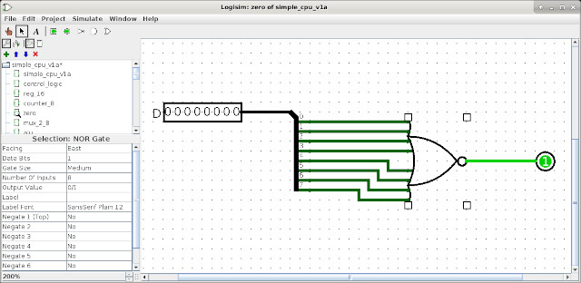

To better understand how a processor works we need to be able to visualise its internal operations, how the Fetch, Decode and Execute phases are implemented in hardware, how data flows through this hardware as an instruction is executed. One way of doing this is to have lots of LEDs :), as seen on bread-board version of the SimpleCPUv1a: (Link). This is not the most reliable, or practical method, as over time wires have the habit of falling out :(, however, fortunately we live in an age of open-source software, so we have access to a range of digital simulation tools: (Link). One commonly used program used to teach digital logic design is Logisim (Link) and the later updated version Logisim-evolution (Link). These software packages are specifically designed for education/teaching and aim to simplify their operation and allow a user to observe how signals change within the hardware as it operates. This is in contrast with industrial software packages such as Xilinx ISE (Link), (Download), where more specialised software features are needed to ensure timing closer of digital designs i.e. that when a design is implemented in actual hardware it will operated as intended. These additional software tools are essential when implementing designs in hardware e.g. FPGA (Link), however, this does come with the cost of increased software complexity, which is not always desirable when teaching the basics. Below is a brief description of the key features of Logisim taken from its home page:
"Logisim is an educational tool for designing and simulating digital logic circuits. With its simple toolbar interface and simulation of circuits as you build them, it is simple enough to facilitate learning the most basic concepts related to logic circuits. With the capacity to build larger circuits from smaller subcircuits, and to draw bundles of wires with a single mouse drag, Logisim can be used (and is used) to design and simulate entire CPUs for educational purposes." - http://www.cburch.com/logisim/
Therefore, i decided to try out some of these free educational digital logic simulators, to see if these could help support simpleCPU teaching. I decided to start with Logisim i.e. the original version, shown in figure 1. Why this version, rather than the newer Logisim-evolution, simple, the older version was simpler to install :). Soooo say hello to the newest addition to the simpleCPU family, the Logisim simpleCPUv1a, if you would like to download a copy please use this link: (Link), you can also download the test program used to initialise its memory here: (Link).
Figure 1 : Logisim
Software
SimpleCPU v1a
Multiplexers
Arithmetic and Logic Unit
Registers and counters
Control logic
Memory
Computer and testing
To install Logisim in Linux, well in my version of Linux Mint, its a simple matter of running the command:
sudo apt-get install logisim
A big advantage of using Logisim is that there is a large online community, as its used in a number of schools and universities, you only need to do a quick Google and you will find examples and advice for most questions. In addition to that there are also a number of nice video tutorials on Youtube, therefore, there is a short learning curve when compared to other software packages. Personally, i found it quick to pickup, however, below is a list of things i stumbled over when learning this software:
For teaching, for simple circuits such as the simpleCPUv1a, Logisim makes sense, as you get a very good overview of the system state through the colour changes in the schematics (circuits), you quickly see what signals are active on each clock cycle etc. However, for larger designs that require longer simulation runs, or more complex testing i.e. a mix of low-level hardware and high-level simulation models you will need to use a different software package, but i should add Logisim was never designed for such tasks, so this is an unfair comment, rather its just something to keep in mind.

Figure 2 : simpleCPU version 1a block diagram
This Logisim implementation of the simpleCPUv1a follows the same design approach as the previous Xilinx implementations i.e. functionality is broken down into a series of sub-components, which are then used to build larger components, which in turn form the key building blocks of the processor's architecture, as shown in figure 2.

Figure 3 : multiplexer - MUX_2_8
Rather than implementing this components from basic logic gates i.e. AND, OR and NOT (Link) i decided to build this component as a separate circuit using the predefined bit-multiplexer. However, Logisim does also allow you to customise the multiplexer primitive component (plexer library folder) i.e. you can define a byte multiplexer, without having to draw this circuit. The reason why i decided to implement this component this way was that i was playing around with the splitter component (wiring library folder), to help me understand how busses are split into bits, and how bits are joined into busses, otherwise the built in component would be the better solution i.e. less components to simulate.

Figure 4 : ALU
A slight departure from the original design (Link), can you spot the differences in figure 4? Logisim supports ADD and SUB primitive components, so i used these to save a bit of drawing time :) i.e. rather than implementing an ADDSUB component from raw logic gates: half-adder, full-adder, ripple-adder etc, as we did in the FPGA implementation. I did implement the bitwise-AND component, as shown in figure 5.

Figure 5 : bitwise AND - AND_2_8

Figure 6 : Register - 4bit

Figure 7 : Register - 8bit

Figure 8 : Register - 16bit
I took the same basic approach as for the FPGA implementation (Link), building a 4bit register from D-type flip-flops, then using this to produce the 8bit and 16bit registers, as shown in figures 6 - 8. You may ask: why didn't you use the Logisim built in register component (memory library folder), well, i confess i did not spot it :), yes that would have been a better solution, but can be argued this approach shows design considerations / component reuse etc.

Figure 9 : Program counter
The program counter (PC) shown in figure 9, and the ring-counter shown in figure 10, are also base on the same designs as the FPGA (Link). The PC again uses the built-in ADD component. Logisim does support a primitive binary counter component, however, i don't think this can be setup as a loadable counter as needed in the PC. is

Figure 10 : Ring counter

Figure 11 : control logic
The control logic shown in figure 11 is slightly different to that used in the FPGA (Link), as i spotted that i had "on purpose" duplicated some logic :), not sure how i missed that, but there was some redundant logic, so i removed it for this implementation. The onehot decoder shown in figure 12 and the zero detect logic shown in figure 13 remain that same.

Figure 12 : onehot decoder

Figure 13 : zero detect

Figure 14 : memory
I thought this one could be a pain i.e. that i would need to use tri-state buffers as used in the bread-board version of the simpleCPU (Link), but Logisim does support dual port memory, shown in figure 14, so all was fine. I only had one small misunderstand regarding the control pins: str, clk, ld, but was good after reading the documentation. To initialise this memory you can simply use a text file i.e. right-click on it and select Load image. This allows you to select a text file, the format used is just a sequential list of values i.e. start from address 0 onwards, as shown below (middle section removed to save space). Note, you can also manually change values in memory by selecting Edit contents.
v2.0 raw 0001 0003 0007 000F 001F 003F 007F 00FF 1001 1003 ... 705E 3000 904B 00FF 1001 A04E 00FF 3000 A051 8052 00FF 1001
To generate this machine-code i could have updated the python based assembler (Link), however, decided to take the easier option and write some shell script to adjust one of the existing object file formats i.e. the .mem file, script shown below:
#!/bin/sh echo "v2.0 raw" > data cat code.mem | while read line do data=`echo $line | cut -d' ' -f2 | rev` echo $data >> data done

Figure 15 : computer
Initially i had the simpleCPUv1a and the memory in a top level schematic/circuit, however, this meant that all you could see whilst simulating were the busses, which wasn't that informative. Therefore, i moved the memory onto the same circuit as the processor, as shown in figure 15. To further aid in the visualisation of data on the processor i added lots of LEDs :). To test this simulation model i used the normal test code as shown below. A short video of Logisim running this code is available here: (Link)(Youtube), do double check the ACC value against the values listed in the comments, i think it looks ok, but as always you never find all the bugs when you are looking, they always pop out of the woodwork later :).
################### # INSTRUCTION-SET # ################### # INSTR IR15 IR14 IR13 IR12 IR11 IR10 IR09 IR08 IR07 IR06 IR05 IR04 IR03 IR02 IR01 IR00 # MOVE 0 0 0 0 X X X X K K K K K K K K # ADD 0 0 0 1 X X X X K K K K K K K K # SUB 0 0 1 0 X X X X K K K K K K K K # AND 0 0 1 1 X X X X K K K K K K K K # LOAD 0 1 0 0 X X X X A A A A A A A A # STORE 0 1 0 1 X X X X A A A A A A A A # ADDM 0 1 1 0 X X X X A A A A A A A A # SUBM 0 1 1 1 X X X X A A A A A A A A # JUMPU 1 0 0 0 X X X X A A A A A A A A # JUMPZ 1 0 0 1 X X X X A A A A A A A A # JUMPNZ 1 0 1 0 X X X X A A A A A A A A # JUMPC 1 0 1 1 X X X X A A A A A A A A -- NOT IMPLEMENTED ######## # CODE # ######## start: move 1 # acc = 1 move 3 # acc = 3 move 7 # acc = 7 move 15 # acc = 15 F move 31 # acc = 31 1F move 63 # acc = 63 3F move 127 # acc = 127 7F move 255 # acc = 255 FF add 1 # acc = 0 0 add 3 # acc = 3 3 add 7 # acc = 10 A add 15 # acc = 25 19 add 31 # acc = 56 38 add 63 # acc = 119 77 add 127 # acc = 246 F6 add 255 # acc = 245 F5 sub 1 # acc = 244 F4 sub 3 # acc = 241 F1 sub 7 # acc = 234 EA sub 15 # acc = 219 DB sub 31 # acc = 188 BC sub 63 # acc = 125 7D sub 127 # acc = 254 FE sub 255 # acc = 255 FF and 255 # acc = 255 FF and 127 # acc = 127 7F and 63 # acc = 63 3F and 31 # acc = 31 1F and 15 # acc = 15 F and 7 # acc = 7 7 and 3 # acc = 3 3 and 1 # acc = 1 1 move 1 # acc = 1 1 store A # M[87] = 1 move 3 # acc = 3 3 store B # M[88] = 3 move 7 # acc = 7 7 store C # M[89] = 7 move 15 # acc = 15 F store D # M[90] = 15 move 31 # acc = 31 1F store E # M[91] = 31 move 63 # acc = 63 3F store F # M[92] = 63 move 127 # acc = 127 7F store G # M[93] = 127 move 255 # acc = 255 FF store H # M[94] = 255 load A # acc = M[87] = 1 1 load B # acc = M[88] = 3 3 load C # acc = M[89] = 7 7 load D # acc = M[90] = 15 F load E # acc = M[91] = 31 1F load F # acc = M[92] = 63 3F load G # acc = M[93] = 127 7F load H # acc = M[94] = 255 FF addm A # acc = 0 0 addm B # acc = 3 3 addm C # acc = 10 A addm D # acc = 25 19 addm E # acc = 56 38 addm F # acc = 119 77 addm G # acc = 246 F6 addm H # acc = 245 F5 subm A # acc = 244 F4 subm B # acc = 241 F1 subm C # acc = 234 EA subm D # acc = 219 DB subm E # acc = 188 BC subm F # acc = 125 7D subm G # acc = 254 FE subm H # acc = 255 FF and 0 # acc = 0 jumpz b1 # TAKEN move 255 # set acc to 255 if error b1: add 1 # acc = 1 jumpnz b2 # TAKEN move 255 # set acc to 255 if error b2: and 0 # acc = 0 jumpnz b3 # FALSE jumpu b4 # unconditional jump b3: move 255 # set acc to 255 if error b4: add 1 # acc = 1 jumpz b5 # FALSE jumpu b6 # unconditional jump b5: move 255 # set acc to 255 if error b6: jumpu start # jump back to start A: .data 0 B: .data 0 C: .data 0 D: .data 0 E: .data 0 F: .data 0 G: .data 0 H: .data 0
WORK IN PROGRESS
This work is licensed under a Creative Commons Attribution-NonCommercial-NoDerivatives 4.0 International License.
Contact email: mike@simplecpudesign.com